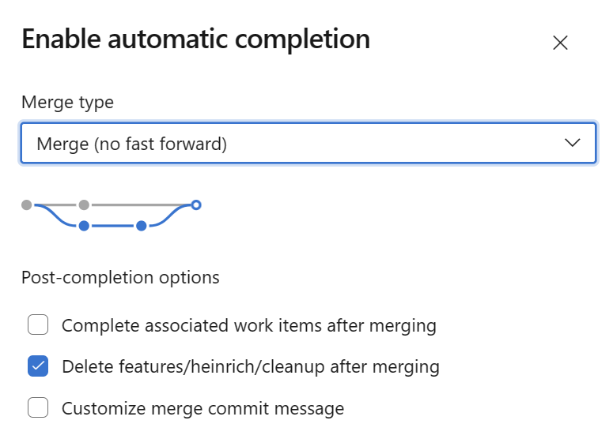
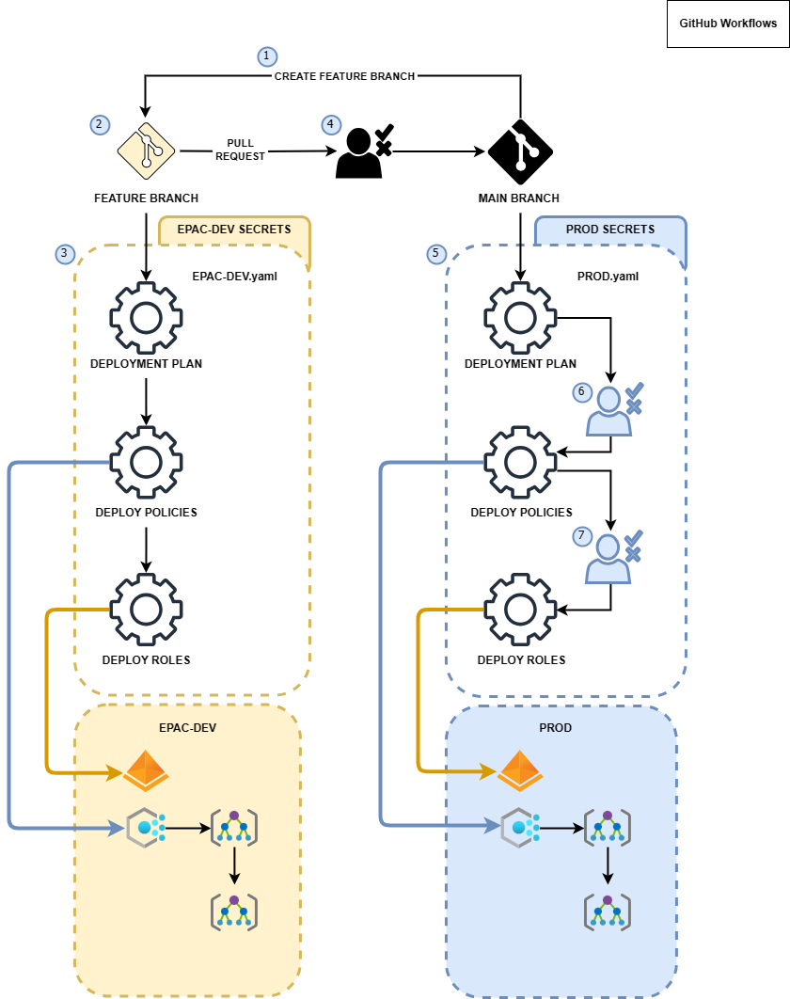
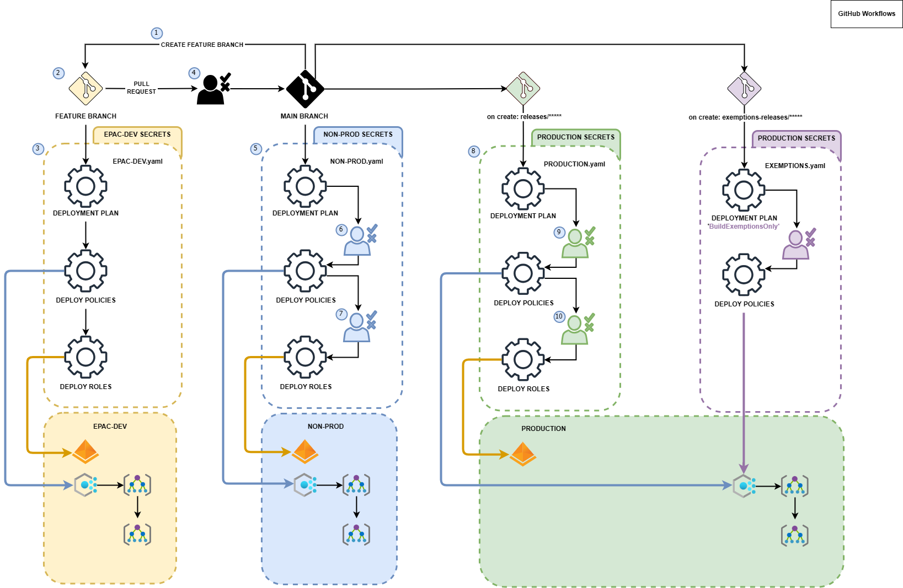
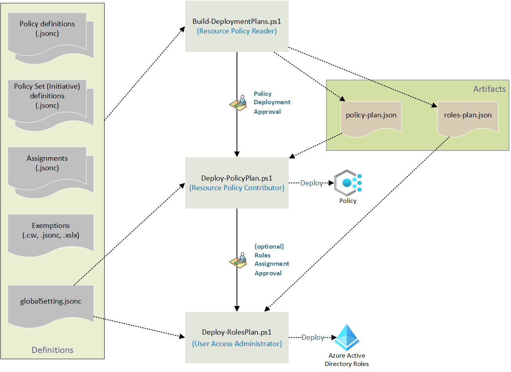

CI/CD Overview
Since EPAC is based on PowerShell scripts, any CI/CD tool with the ability to execute scripts can be used. The starter kits currently include pipeline definitions for Azure DevOps and GitHub Actions. Additional starter kits are being implemented and will be added in future releases.
The authors are interested in supporting other deployment pipelines. If you have developed pipelines for other technologies, such as GitLab, Jenkins, etc., please contribute them to the project as additional starter kits.
This repository contains starter pipelines and instructions for can be found here:
Create Azure DevOps Pipelines or GitHub Workflows
The scripts New-PipelinesFromStarterKit create Azure DevOps Pipelines or GitHub Workflows from the starter kit. You select the type of pipeline to create, the branching flow to implement, and the type of script to use.
Azure DevOps Pipelines
The following commands create Azure DevOps Pipelines from the starter kit; use one of the commands:
New-PipelinesFromStarterKit -StarterKitFolder .\StarterKit -PipelinesFolder .\pipelines -PipelineType AzureDevOps -BranchingFlow GitHub -ScriptType script
New-PipelinesFromStarterKit -StarterKitFolder .\StarterKit -PipelinesFolder .\pipelines -PipelineType AzureDevOps -BranchingFlow Release -ScriptType script
New-PipelinesFromStarterKit -StarterKitFolder .\StarterKit -PipelinesFolder .\pipelines -PipelineType AzureDevOps -BranchingFlow GitHub -ScriptType module
New-PipelinesFromStarterKit -StarterKitFolder .\StarterKit -PipelinesFolder .\pipelines -PipelineType AzureDevOps -BranchingFlow Release -ScriptType module
GitHub Workflows
The following commands create GitHub Workflows from the starter kit; use one of the commands:
New-PipelinesFromStarterKit -StarterKitFolder .\StarterKit -PipelinesFolder .\.github/workflows -PipelineType GitHubActions -BranchingFlow GitHub -ScriptType script
New-PipelinesFromStarterKit -StarterKitFolder .\StarterKit -PipelinesFolder .\.github/workflows -PipelineType GitHubActions -BranchingFlow Release -ScriptType script
New-PipelinesFromStarterKit -StarterKitFolder .\StarterKit -PipelinesFolder .\.github/workflows -PipelineType GitHubActions -BranchingFlow GitHub -ScriptType module
New-PipelinesFromStarterKit -StarterKitFolder .\StarterKit -PipelinesFolder .\.github/workflows -PipelineType GitHubActions -BranchingFlow Release -ScriptType module
Developing Policy Resources in a Feature Branch
Developing Policy resources is the dame for GitHub Flow and Release Flow. The following steps are recommended:
- Developers create feature branches from
mainbranch with a namefeature/*user-id*/*feature-name*. - Developers create or update Policy definitions, Policy Set definitions, Policy Assignment, amd Policy Exemptions files in the
Definitionsfolder. Developers push changes to the feature branch. - The CI/CD pipeline/action is triggered from the push to the feature branch. We recommend to use a single App Registration (SPN) to execute pipeline/action during development. The SPN must have
Ownerrights to theepac-devManagement Group and the Microsoft Graph permissions described below. The steps are:- Build-DeploymentPlans.ps1 to calculate the deployment plan
- Deploy-PolicyPlan.ps1 to deploy the plan's Policy Resources
- Deploy-RolesPlan.ps1 to create the role assignments for the Managed Identities required for
DeployIfNotExistsandModifyPolicies. - The starter pipelines calculate the Plans for tenant(s). The Plans are stored in the
Outputfolder.
- When the feature is ready, the developer creates a Pull Request (PR) to merge the feature branch into the
mainbranch. - Set the pull request to be auto-completed. Ensure that you select
Delete feature/*user-id*/*feature-name* after merging.

- After the merge completes, cleanup your local clone by:
- Switching the branch to main
- Pull the latest changes from main
- Delete the feature branch
- Run
git remote prune originto remove the remote tracking branch.
Steps 1 to 3 are repeated during the development process.
The resulting pipeline CI/CD trigger depends on the type of flow used. The following sections describe the simplified GitHub Flow and the more advanced Release Flow.
General Hardening Guidelines
- Least Privilege: Use the least privilege principle when assigning roles to the SPNs used in the CI/CD pipeline. The roles should be assigned at the root or pseudo-root management group level.
- Require a Pull Request for changes to the
mainbranch. This ensures that changes are reviewed before deployment. - Require additional reviewers for yml pipeline and script changes.
- Require branches to be in a folder
featureto prevent accidental deployment of branches. - Require an approval step between the Plan stage/job and the Deploy stage/job. This ensures that the changes are reviewed before deployment.
- [Optional] Require an approval step between the Deploy stage/job and the Role Assignments stage/job. This ensures that the role assignments are reviewed before deployment.
- For
Release Flowonly: allow only privileged users to createreleases-prodandreleases-exemptions-onlybranches and require those branches to be created from the main branch only.
Simplified GitHub Flow for Policy as Code
The diagram below shows the use of GitHub Flow in Policy as Code. The diagram uses GitHub workflow terminology; however, the concepts apply equally to other CI/CD technologies.
The merge of the PR into the main branch triggers the CI/CD pipeline/action to deploy the changes to the tenant environment.
Since these deployments are most often deployed at the pseudo root of the tenant, we recommend creating a separate App Registration (SPN) for each of the 3 steps with roles assigned in line with the least privilege principle. The steps are:
- Build-DeploymentPlans.ps1 to calculate the deployment plan. SPN must have
EPAC Resource Policy Readercustom role on the root or pseudo-root management group and the Microsoft Graph permissions described below. - Approval gate for Policy resources deployment.
- Deploy-PolicyPlan.ps1 to deploy the plan's Policy Resources. SPN must have
Resource Policy Contributorbuilt-in role on the root or pseudo-root management group. Microsoft Graph permissions are not required. - Approval gate for Role assignments deployment.
- Deploy-RolesPlan.ps1 to create the role assignments for the Managed Identities required for
DeployIfNotExistsandModifyPolicies. SPN must haveUser Access Administratorbuilt-in role on the root or pseudo-root management group and the Microsoft Graph permissions described below.

GitHub Flow Variations
EPAC can handle any flow you like. For GitHub Flow, the following variations are possible.
- Adding a deployment plan from the feature branch to the production environment in step 3 above during the development process (see steps 1 through 3 in the diagram above) by adding a step using Build-DeploymentPlans.ps1. This is useful to test the deployment plan in the production environment before creating a PR. We recommend using a separate SPN for this step (job).
- PR creation trigger for a CI/CD pipeline/action deploying the changes to an
epac-testenvironment with the same steps as the deployment toepac-devenvironment in steps 3 above.
Advanced CI/CD with Release Flow
Testing the Policy changes against the IaC nonprod environment is often desirable to prevent surprises when deploying against the IaC prod environment. IaC environments can either be separate tenants or management groups within a single tenant (recommended).
Release Flow is a more advanced CI/CD process that allows for testing the Policy changes against the IaC nonprod environment before deploying to the IaC prod environment as shown in the diagram below.
- The merge of the PR into the
mainbranch triggers the CI/CD pipeline/action to deploy the changes to the IaCnonprodenvironment. - Wait a few days to verify that the Policies in the IaC
nonprodenvironment are working as expected. - Creating a
releases-prodbranch triggers a pipeline deploying Policy resources to the IaCprodenvironment. - Keep n-1
releases-prodbranches to allow for quick rollback in case of issues. - Sometimes, Exemptions need to be granted while keeping a regular lifecycle for Definitions and Assignments. The script
Build-DeploymentPlanshas a parameterBuildExemptionsOnlyto deploy only Exemptions. - Creating a
releases-exemptions-onlybranch triggers a pipeline deploying Exemptions only to the IaCprodenvironment. - Keep n-1
releases-exemptions-onlybranches to allow for quick rollback in case of issues.
If necessary, you can also branch of the releases-prod branch to create a hotfix branch to fix issues in the prod environment. Similar to the development process, the hotfix branch is merged into the releases-prod branch with a Pull request.

Release Flow Variations
EPAC can handle any flow you like. For Release Flow, the following variations are possible.
- Adding a deployment plan from the feature branch to the production environment in step 3 above during the development process (see steps 1 through 3 in the diagram above) by adding a step using Build-DeploymentPlans.ps1. This is useful to test the deployment plan in the production environment before creating a PR. We recommend using a separate SPN for this step (job).
- PR creation trigger for a CI/CD pipeline/action deploying the changes to an
epac-testenvironment with the same steps as the deployment toepac-devenvironment in steps 3 above.
Multiple Tenants
For multiple tenants simply apply each of the flows (except for the feature branch) above to each tenant's IaC environments. This works for both simplified GitHub flow and Microsoft Release flow.
Deployment Scripts
While the scripts are intended to be used in CI/CD, they can be run manually to create a semi-automated EPAC solution. This is useful:
- CI/CD environment is not yet available.
- Debugging the scripts from Visual Studio Code.
Deployment scripts require permissions to the Azure environment and Microsoft Graph API. In a CI/CD scenario, App Registration (SPNs) are used to execute the scripts. These identities must be granted the necessay permissions as documented in App Registrations Setup. In a semi-automated scenario, the user executing the scripts must have the necessary permissions. The scripts will prompt for the necessary permissions.
The image below shows the scripts and the roles required for their execution.
Build-DeploymentPlans.ps1requiresEPAC Resource Policy Readercustom role on the root or pseudo-root management group and the Microsoft Graph permissions described below.Deploy-PolicyPlan.ps1requiresResource Policy Contributorbuilt-in role on the root or pseudo-root management group. Microsoft Graph permissions are not required.Deploy-RolesPlan.ps1requiresUser Access Administratorbuilt-in role on the root or pseudo-root management group and the Microsoft Graph permissions described below.
Furthermore, it shows the consumption of the Definitions files by script Build-DeploymentPlans.ps1 and output of two plan files (Policy and Roles). The plan files are subsequently used by the deployment scripts Deploy-PolicyPlan.ps1 and Deploy-RolesPlan.ps1.

Common Script Parameters
| Parameter | Explanation |
|---|---|
PacEnvironmentSelector |
Selects the EPAC environment for this plan. If omitted, interactively prompts for the value. |
DefinitionsRootFolder |
Definitions folder path. Defaults to environment variable $env:PAC_DEFINITIONS_FOLDER or ./Definitions. It must contain file global-settings.jsonc. |
Interactive |
Defaults to $false. |
Build-DeploymentPlans.ps1
Analyzes changes in Policy definition, Policy Set definition, and Policy Assignment files. It calculates a plan to apply deltas. The deployment scripts are declarative and idempotent: this means, that regardless how many times they are run, they always push all changes that were implemented in the JSON files to the Azure environment, i.e. if a JSON file is newly created/updated/deleted, the pipeline will create/update/delete the Policy and/or Policy Set and/or Policy Assignments definition in Azure. If there are no changes, the pipeline can be run any number of times, as it won't make any changes to Azure.
| Parameter | Explanation |
|---|---|
OutputFolder |
Output folder path for plan files. Defaults to environment variable $env:PAC_OUTPUT_FOLDER or ./Output. |
DevOpsType |
If set, outputs variables consumable by conditions in a DevOps pipeline. Default: not set. |
BuildExemptionsOnly |
If set, only builds the Exemptions plan. This useful to fast-track Exemption when utilizing Microsoft Release Flow Default: not set. |
VirtualCores |
Number of (virtual) cores available to calculate the deployment plan. Defaults to 4. |
Deploy-PolicyPlan.ps1
Deploys Policies, Policy Sets, Policy Assignments, and Policy Exemptions at their desired scope based on the plan.
| Parameter | Explanation |
|---|---|
InputFolder |
Input folder path for plan files. Defaults to environment variable $env:PAC_INPUT_FOLDER, $env:PAC_OUTPUT_FOLDER or ./Output. |
VirtualCores |
Number of (virtual) cores available to deploy Policy objects in parallel. Defaults to 4. |
Deploy-RolesPlan.ps1
Creates the role assignments for the Managed Identities required for DeployIfNotExists and Modify Policies.
| Parameter | Explanation |
|---|---|
InputFolder |
Input folder path for plan files. Defaults to environment variable $env:PAC_INPUT_FOLDER, $env:PAC_OUTPUT_FOLDER or ./Output. |